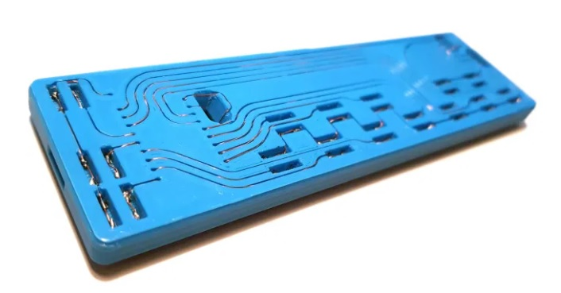

LEET Synthesizerから発見。画像もここから転載。
昨日紹介した携帯ゲーム機と同じ手法で作られたシンセサイザーの作例です。
同じ規格の複数のモジュールがデザインされており、3Dプリンタのフィラメント特有のかわいらしい色合いの筐体が目を引きます。
回路はいたって単純ですが、配線方法がユニークです。

製品として作るのは難しそうですが、3Dプリンタが手元にあれば、面倒なPCBの発注をせずとも、作り始めることが出来るというのが魅力だと感じました。

← 前の記事 - PCB基板を使わないユニークな配線の3Dプリンタ製の携帯ゲーム機

次の記事 - からくりだけで制御された「落ちない仕組み」 →
関連記事

3Dプリンタを楽器として扱う

手をかざすことで操作できる電子ドラム

アーケードゲームのボタンをふんだんに使ったMIDIコントローラー

多腕のピアノ自動演奏装置

ゲームボーイを組み込んだ3Dプリンタ製のショルキー